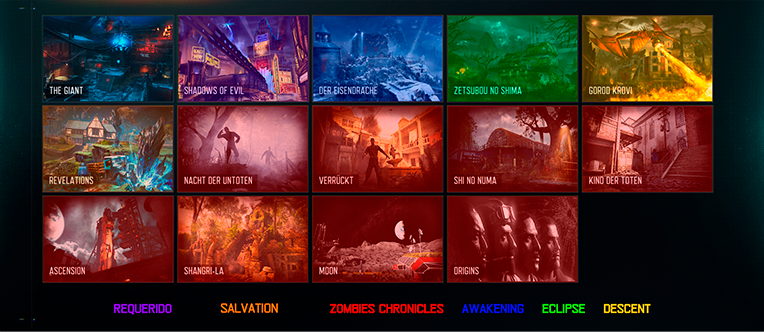
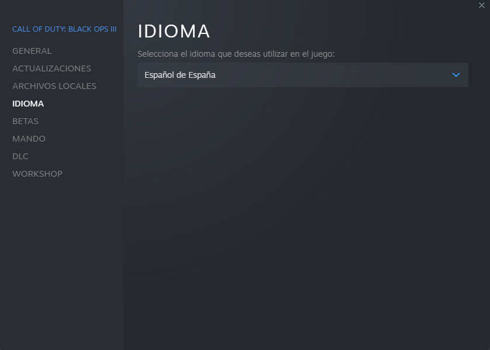
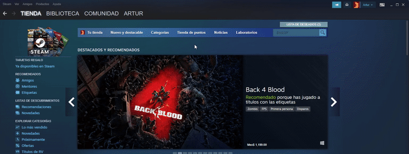
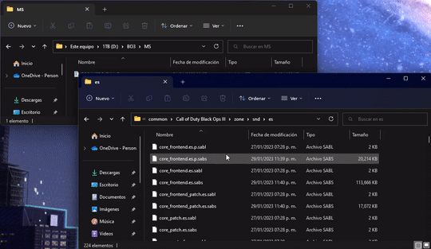

Introducción
.png)
Como muchos saben, el idioma Español Latino fue exclusivo de
consolas para este juego, por lo que se decidió modificar los
archivos del idioma Español Castellano para portear su doblaje a
PC.
En esta Guía se explicará el proceso de instalación del doblaje
completo en todos sus modos.
¿Qué hay de nuevo?
Actualización v2.2 - 12/04/2023
Corregido un diálogo del Arco de la oscuridad en Der Eisendrache.
Actualización v2.1 - 06/03/2023
Agregado soporte nativo para Revelations.
Actualización v2.0 - 20/02/2023
Cambiado el nombre a "Mod Latino Deluxe".
Soporte nativo para el modo Campaña.
Soporte nativo para el modo Multijugador.
Soporte nativo para los modos Bonificación.
Compatible con el cliente en desarollo Boiii.
Todos los
audios del juego fueron remplazados de forma más limpia y
sin pérdidas, también ahora pesan 10 veces menos que la versión
anterior.
Todos
los mapas disponibles mediante reemplazo de archivos, a
excepción de Revelations.
Media
Información
El mod es 100% Plug &
Play: El juego detecta los archivos como si fueran originales de Steam, compatible con
multijugador cooperativo, en línea, por servidores, LAN, mods de la comunidad y todas las funciones nativas
de
Black Ops III.
El mod portea
absolutamente todos los diálogos de la última versión original en Playstation 4, incluyendo
todos los contenidos descargables.
Se ha probado la
compatibilidad hasta el día de la actualización con el cliente de la comunidad en desarrollo
boiii y el parche de la comunidad T7 Community Patch.
Todos los diálogos
están
convertidos sin pérdidas, tienen la misma calidad que en consola, sin ruido ni
interferencias.
Todos los diálogos son
fáciles de conseguir abriendo nuestros archivos con programas como Black Ops II Sound
Studio Extended[github.com] o Greyhound y aunque, no somos dueños de los mismos, agradeceríamos ser
mencionados si usan nuestro mod como medio para adquirirlos.
Descargas
Todos los modos juntos:
https://www.mediafire.com/file/036oqh15inziqjf/BO3_MSPC_FULL_2.2.7z/file
Modos/Mapas por separado:
https://www.mediafire.com/folder/fxa4xrrlre40k/Call+Of+Duty+Black+Ops+III+-+Mod+Latino+Deluxe
El contenido del enlace, consta de cuatro elementos:
La carpeta Multijugador contiene un único archivo.
La carpeta Zombies contiene todos los mapas clasificados por contenido descargable (DLC).
→ En al carpeta de Zombies Shadows of Evil es obligatorio si quieres usar cualquier otro mapa.
El archivo CORE es totalmente requerido para todos los modos y por ende obligatorio descargarlo.
Distribución de mapas del modo Zombies: 
Instalación
Primero hay que descargar el mod completo o lo deseado de las carpetas siguiendo la información anterior.
Algún programa para descomprimir archivos 7z (7-Zip, NanaZip, etc)
A sí mismo el juego debe estar instalado en Español de España.

Hay que ubicar la carpeta del juego y dirigirse a "Call of Duty Black Ops III\zone\snd\es".

En esta última carpeta se debe extraer el contenido(.sabs .sabl) del archivo comprimido(.7z) que hayamos elegido, importante sobrescribir todos los archivos del destino.

Errores Conocidos
Estos errores no afectan de forma drástica la jugabilidad, aún así están siendo investigados y puede que en
un futuro logremos resolverlos o puede que no (no disponemos de las herramientas de Treyarch)
Campaña:
En el modo Campaña si la misión tiene varios escenarios, el motor puede saturarse resultando en algunos
sonidos quedando mudos (Disparos y golpes)
Soluciones (Cualquiera de estas sirve):
→ Salir al menú de la campaña (Usando Salir y Guardar) y reanudar la misión.
→ Salir al menú de inicio, cambiar al menú de otro modo (Zombies o Multijugador) y volver al modo Campaña
para reanudar misión.
→ Reiniciar el juego.
Multijugador:
En el modo Multijugador, si la partida es muy larga y/o tiene mas de una ronda (Punto Caliente, Dominio,
Demolición, etc.) algunos sonidos pueden llegar a quedar mudos (música y diálogos)
Soluciones (Cualquiera de estas sirve):
→ Salir al menú de inicio, cambiar al menú de otro modo (Campaña o Zombies) y volver al modo
multijugador.
→ Reiniciar el juego.
Zombies:
En rondas altas, puede ocurrir lo mismo que en los anteriores errores descritos, esto debería solucionarse
al terminar la partida, pero puede volver a ocurrir.
En el mapa Der Eisendrache, en el último paso del arco de oscuridad, algunas veces puede que omita la
primera parte del nombre.
Workshop - Zombies
Todos los mapas del
modo Zombies están disponibles de forma adicional en la Workshop por los que gusten elegir este método
(Recomendado para los usuarios con una copia en inglés)
En esta colección se pueden encontrar todos los mapas:
Asociados y Créditos
Casi un año de desarollo, y mucha gente aportó a este proyecto:
Artur16211 "Artur" se
encargó de recopilar los diálogos originales, crear diccionarios de alias de sonido, ordenarlos e
inyectarlos en los archivos originales del juego.
atuburapaler "atu" se
encargó de la presentación, edición, grabación, redacción, y organizó algunos diálogos.
Guitargamer es el
autor de la modificación a Black Ops II Sound Studio de master131 su Black Ops II Sound Studio
Extended[github.com] agregando soporte para Black Ops III es la herramienta que usamos para descompilar,
compilar e inyectar todos los diálogos de consola y PC.
Ademas de crear Scripts para desencriptar/encriptar los audios de Revelations y poder remplazar sus
audios.
Activision, Treyarch,
y otros son dueños del material utilizado en esta creación, no se busca infrigir ninguna norma ni lucrar con
el mismo.
Elenco del doblaje
original mexicano
https://doblaje.fandom.com/es/wiki/Call_of_Duty:_Black_Ops_III